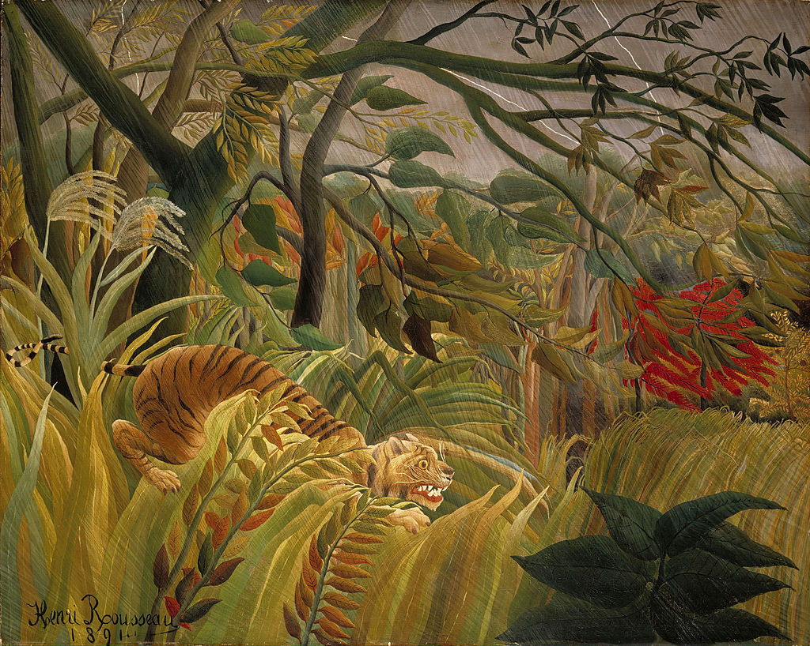

<head>
<meta charset="UTF-8" />
<meta name="keywords" content="drawing, painting" />
<meta name="description" content="drawings by Sunjy" />
<title>Sunjy</title>
<link rel="shortcut icon" type="image/x-icon" href="../../mImages/mCommon/favicon.ico" media="screen" />
<link rel="stylesheet" type="text/css" href="../../mCsses/mCommon/mCssA.css" />
<link rel="stylesheet" type="text/css" href="../../mCsses/mCommon/mCssB.css" />
<link rel="stylesheet" type="text/css" href="../../mCsses/mCommon/mCssC.css" />
<link rel="stylesheet" type="text/css" href="../../mCsses/mCommon/mCssD.css" />
<link rel="stylesheet" type="text/css" href="../../mCsses/mContent/mCssA.css" />
<link rel="stylesheet" type="text/css" href="../../mCsses/mContent/mCssB.css" />
<link rel="stylesheet" type="text/css" href="../../mCsses/mContent/mCssC.css" />
<link rel="stylesheet" type="text/css" href="../../mCsses/mContent/mCssD.css" />
</head>
<script type="text/javascript" src="../../mScripts/mContent/mContentAA.js" /></script>
<script type="text/javascript" src="../../mScripts/mContent/mContentAB.js" /></script>
<script type="text/javascript" src="../../mScripts/mContent/mContentAC.js" /></script>
<script type="text/javascript" src="../../mScripts/mContent/mContentAD.js" /></script>
<script type="text/javascript"></script> 
<script type="text/javascript">
document.write('<div class="mImgAbsolute"></div>');
/*
document.write('<p class="mFontSizeBColor" />From a white paper...</p>');
document.write('<table class="center"><tr><td>');
document.write('');
document.write('</td></tr></table>');
*/
</script>


<script type="text/javascript">
document.write('<p class="mFontSizeBColor" />Tiger in a Tropical Storm</p>');
document.write('<p class="mFontSizeSColor" />“Tiger in a Tropical Storm” by Henri Rousseau was the first of the artist’s jungle paintings and shows a tiger, illuminated by a flash of lightning, preparing to pounce on its prey during a raging gale.<br><br>Rousseau had never left France to see real jungles. Still, his inspiration came from the botanical gardens of Paris, which included zoological galleries and from geographic illustrations in prints and books.<br><br>The tiger’s prey is beyond the canvas, so it is left to the imagination of the viewer to decide what is the victim.<br><br>Rousseau exhibited this painting in 1891 under the title “Surpris!” at an exhibition that was open to all artists and had no judges as gatekeepers. The picture received mixed reviews, as most critics mocked Rousseau’s work as childish.<br><br>Despite its apparent simplicity, Rousseau’s jungle painting was built up meticulously in layers, using a large number of green shades to capture the lush abundance of the jungle.<br><br>He also devised his method for depicting the lashing rain by trailing strands of silver paint diagonally across the canvas.<br><br>“Tiger in a Tropical Storm” brought Rousseau his first recognition, and he continued to exhibit his work annually at the Salon des Indépendants.<br><br>Critical responses to his work did not change. His work continued to be derided by the critics up to and after his death in 1910.<br><br>Fortunately, however, Rousseau did win a loyal following and support from among his contemporaries, such as Picasso, Matisse, and Toulouse-Lautrec were all admirers of his work.<br></p>');
document.write('<table class="center" /><tr><td>');
document.write('<br>Rousseau had never left France to see real jungles. Still, his inspiration came from the botanical gardens of Paris, which included zoological galleries and from geographic illustrations in prints and books.<br><br>The tiger’s prey is beyond the canvas, so it is left to the imagination of the viewer to decide what is the victim.<br><br>Rousseau exhibited this painting in 1891 under the title “Surpris!” at an exhibition that was open to all artists and had no judges as gatekeepers. The picture received mixed reviews, as most critics mocked Rousseau’s work as childish.<br><br>Despite its apparent simplicity, Rousseau’s jungle painting was built up meticulously in layers, using a large number of green shades to capture the lush abundance of the jungle.<br><br>He also devised his method for depicting the lashing rain by trailing strands of silver paint diagonally across the canvas.<br><br>“Tiger in a Tropical Storm” brought Rousseau his first recognition, and he continued to exhibit his work annually at the Salon des Indépendants.<br><br>Critical responses to his work did not change. His work continued to be derided by the critics up to and after his death in 1910.<br><br>Fortunately, however, Rousseau did win a loyal following and support from among his contemporaries, such as Picasso, Matisse, and Toulouse-Lautrec were all admirers of his work.<br>" />');
document.write('</td></tr></table>');
</script>


